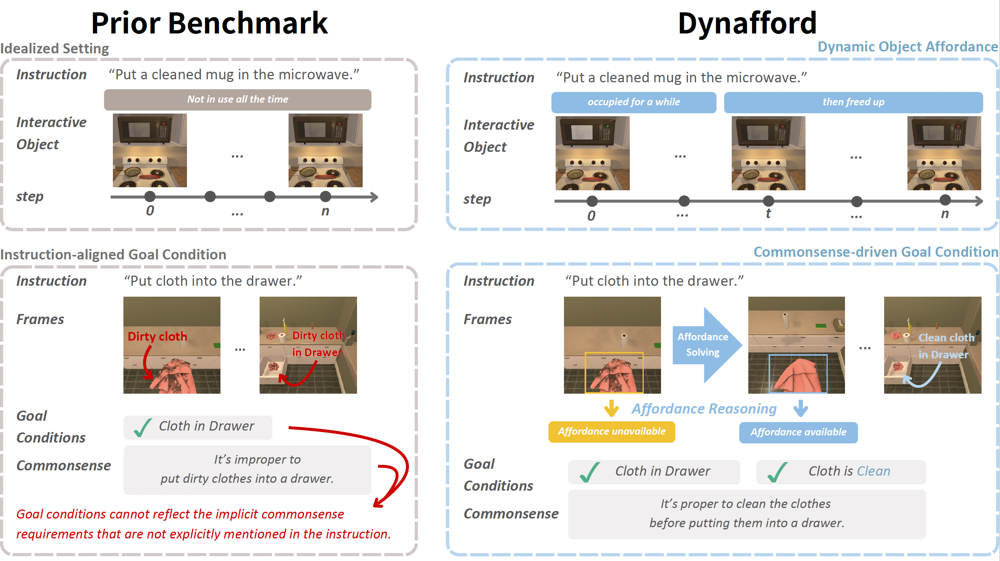
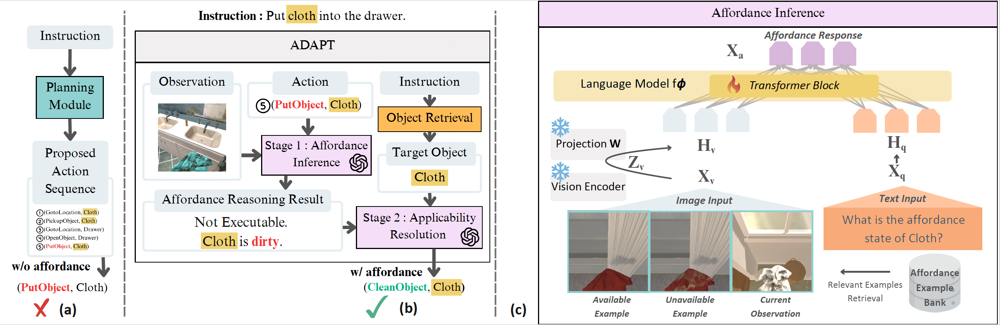

Abstract
Intelligent embodied agents should not simply follow instructions, as real-world environments often involve unexpected conditions and exceptions. However, existing methods usually focus on directly executing instructions, without considering whether the target objects can actually be manipulated, meaning they lack the ability to assess available affordances. To address this limitation, we introduce ADAPT, a benchmark that evaluates embodied agents in dynamic environments where object affordances may change over time and are not specified in the instruction. ADAPT requires agents to perceive object states, infer implicit preconditions, and adapt their actions accordingly. To enable this capability, we further propose Affordance-Aware Action Selection (AAS), a plug-and-play module that augments existing planners with explicit affordance reasoning. Experiments demonstrate that incorporating AAS significantly improves robustness and task success across both seen and unseen environments. We also show that a domain-adapted, LoRA-finetuned vision-language model used as the affordance inference backend outperforms a commercial LLM (GPT-4o), highlighting the importance of task-aligned affordance grounding.

Overview of DynAfford benchmark. Unlike prior embodied benchmarks (left) that assume static object usability and fully specified goals, DynAfford introduces dynamic object affordances and commonsense-driven goal conditions (right). Agents must detect latent preconditions (e.g., cleanliness), resolve temporarily inapplicable actions, and adapt their behavior beyond literal instruction following.

Overview of ADAPT: Affordance-Aware Action Selection. (a) Standard embodied instruction-following pipeline used in prior work, where the agent directly executes a planned action sequence without considering dynamic affordance constraints. (b) Our ADAPT framework augments action execution with affordance awareness. For each proposed action, the agent first performs Stage 1: Affordance Inference by jointly considering the current observation and the intended action. If the action is considered inapplicable (e.g., the microwave is occupied), Stage 2: Applicability Resolution selects an alternative executable action (e.g., waiting) instead of blindly executing the original plan. (c) Architecture of the affordance inference module, which combines LoRA-finetuned visual grounding with multimodal in-context learning using retrieved affordance examples to infer object usability.
Poster
BibTeX
@article{YourPaperKey2024,
title={Your Paper Title Here},
author={First Author and Second Author and Third Author},
journal={Conference/Journal Name},
year={2024},
url={https://your-domain.com/your-project-page}
}